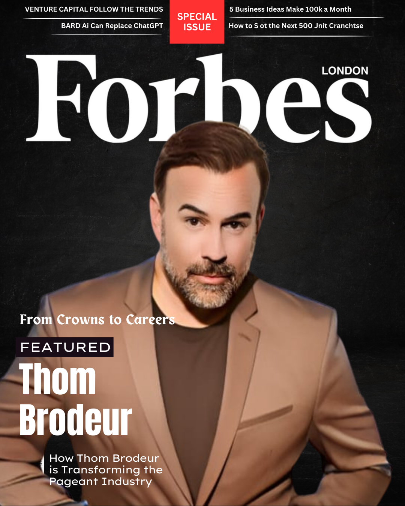
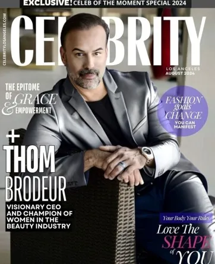
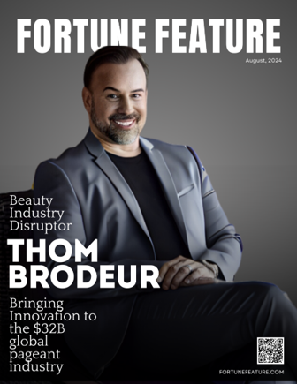
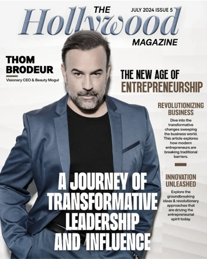
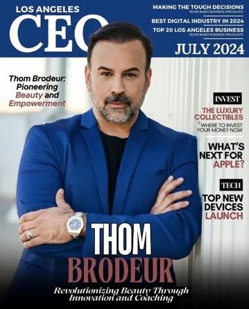

<link rel="stylesheet" href="../Pages/News/news.css">
<section>
    <nav class="headerFooter">
        <video autoplay loop muted playsinline  preload="auto" src="../../assets/videos/news.webm" class="background-video"></video>
        <div class="overlay-banner">
            <div class="header-content">
                <h1>NEWS</h1>
            </div>
        </div>
    </nav>
    <div class="separador"></div>
    <div class="hero">
        <video autoplay loop muted playsinline  preload="auto" src="../../assets/videos/backgroundStar.webm"></video>
        <div class="content-sections">
            <div class="section-one">
                
                <h1 class="tiltNew">Redefining the Future of Pageantry: Thom Brodeur’s Mission to
                    Empower Women in a $30+ Billion Industry</h1>
                    <p class="textNew">
                        Thom Brodeur, a visionary entrepreneur and founder of Brodeur Beauty and  PageantFans™, is taking on the challenge of transforming the global  beauty pageant industry—a space historically centered on women but often  controlled by men. With a career spanning leadership roles at tech and  media giants like GoDaddy, Marketwired, and Yandy.com, Brodeur has  brought his unique business insights to industries ranging from B2B to  consumer-facing sectors. Today, he’s channeling that experience into a  bold initiative: reshaping the pageant world to empower the women who  fuel it <a href="https://forbeslondon.com/thom-brodeur-aims-to-revolutionize-the-pageant-industry-empowering-women-beyond-the-crown/" target="_blank"><button class="button-1">Read More</button></a>
                    </p>
                    <div class="part-two">
                        <p class="p-two">
                            Thom Brodeur: Brand Builder. Market Disruptor. Mr. Congeniality. Brodeur’s final word to our editor was “there is an old saying: ‘behind every great man, there has to be a great woman.’ Personally? I’d like to flip that on its head. I want to be the great man, behind every great woman who chooses to participate in this industry. Going back to basics, remembering what and most importantly ‘who’ is the center of these industries, and innovating and challenging the status quo is how we’ll get there. Watch this space for big things. They’re coming.” <a href="https://celebritylosangeles.com/fashion/thom-brodeur-visionary-ceo-and-champion-of-women-in-the-beauty-industry/" target="_blank"><button class="button-1">Read More</button></a>
                        </p>
                        
                    </div>
            </div>
            <div class="section-two">
                <div class="elements-section">
                    
                    <p class="textNew">Thom Brodeur: Brand Builder. Market Disruptor. Mr. Congeniality. How a smalltown boy plans to change a global industry built for women <a href="https://fortunefeature.com/thom-brodeur-brand-builder-market-disruptor-mr-congeniality/" target="_blank"><button class="button-1">Read More</button></a></p>
                </div>

                <div class="elements-section">
                    
                    <p class="textNew">Thom Brodeur: Visionary CEO, Beauty Mogul, and Advocate for Women in Technology. In the dynamic intersection of beauty, technology, and business, few  names resonate as powerfully as Thom Brodeur. An American businessman,  brand builder, and philanthropist, Brodeur’s career is a testament to  visionary leadership, relentless innovation, and unwavering advocacy for  women in industries often dominated by male perspectives <a href="https://thehollywoodmagazine.com/hollywood/thom-brodeur-visionary-ceo-beauty-mogul-and-advocate-for-women-in-technology/" target="_blank"><button class="button-1">Read More</button></a></p>
                </div>

                <div class="elements-section">
                    
                    <p class="textNew">Thom Brodeur: A Visionary Leader in the Beauty IndustryPioneering Innovation and Empowerment in the World of Beauty and Beyond. Brodeur has carved a niche for himself by not only revolutionizing  beauty brands but also empowering individuals to achieve their full  potential. His journey, marked by visionary initiatives and a commitment  to excellence, has made a significant impact on the global beauty  landscape <a href="https://ceolosangeles.com/ceo/thom-brodeur-a-visionary-leader-in-the-beauty-industry/" target="_blank"><button class="button-1">Read More</button></a></p>
                </div>
            </div>

        </div>
    </div>
</section>